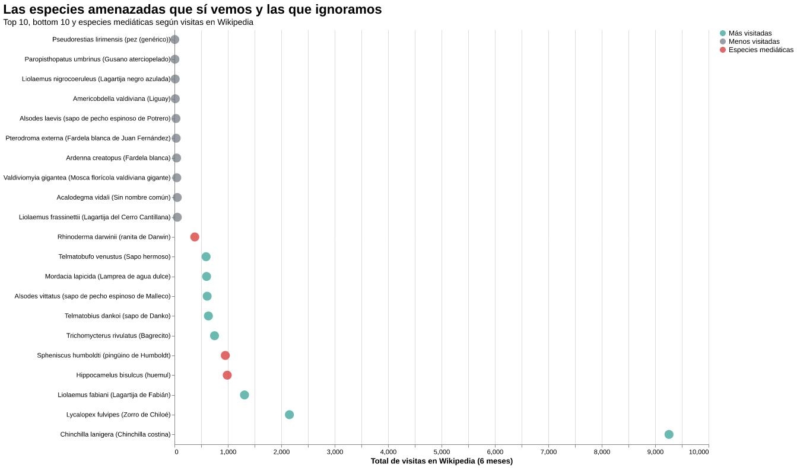

Algunas especies logran instalarse en la memoria colectiva incluso sin haber sido vistas nunca en persona. Basta escuchar sus nombres para imaginarlas: el huemul cruzando montañas nevadas del sur de Chile; el pingüino de Humboldt desplazándose entre rocas costeras del norte; o la pequeña ranita de Darwin, anfibio diminuto cuyo método de reproducción parece inventado por la ciencia ficción. Hay animales que, por distintas razones, consiguen permanecer presentes dentro del imaginario cultural.
Otras especies no tienen esa suerte.
Mientras ciertos animales acumulan miles de visitas en Wikipedia, existen especies amenazadas que sobreviven en una invisibilidad digital casi absoluta. Algunas apenas registran búsquedas durante meses, pese a encontrarse igualmente en categorías de conservación críticas. Sus nombres rara vez aparecen en campañas ambientales, medios de comunicación o conversaciones cotidianas.
Dentro de esta diferencia también habita una forma de entender la conservación. No todos los animales logran transformarse en símbolos reconocibles de la biodiversidad chilena. Algunos poseen características que facilitan su difusión pública: cuerpos grandes, apariencias llamativas o nombres fáciles de recordar. Otros permanecen relegados a descripciones científicas difíciles de pronunciar y fotografías que pocas veces circulan fuera de espacios especializados.
La atención digital no determina por sí sola la supervivencia de una especie, pero sí permite observar cómo funciona el interés público frente a la conservación. En este sentido, Wikipedia opera como una especie de termómetro cultural: las visitas reflejan qué animales circulan con mayor frecuencia en contenidos educativos, redes sociales o el imaginario global, demostrando que la atención pública no depende únicamente del riesgo biológico.
Visualización: El termómetro digital

Contraste de búsquedas en Wikipedia entre el Top 10 de especies mediáticas y el Bottom 10 de especies invisibles.
La paradoja del carisma
Al mirar el gráfico de datos, la primera gran sorpresa destruye nuestras suposiciones sobre el protagonismo mediático institucional. Uno esperaría que el Hippocamelus bisulcus (huemul), por su presencia en el escudo nacional, o el Spheniscus humboldti (pingüino de Humboldt), debido a su constante uso turístico, lideraran las búsquedas. Sin embargo, ambos son eclipsados de manera categórica por una especie que casi nadie asocia con la contingencia ambiental chilena: la Chinchilla costina (Chinchilla lanigera), que corona la lista con un abismal récord de 9.259 visitas en el periodo analizado.
¿Por qué una especie críticamente amenazada en los cerros de la zona norte genera este nivel de obsesión digital? La respuesta expone una de las mayores paradojas del carisma animal. Según los estudios históricos del ecólogo chileno Jaime E. Jiménez, la chinchilla sufrió una presión comercial catastrófica debido a la industria peletera, exportándose millones de pieles a nivel global durante los siglos XIX y XX, lo que fijó su nombre en el vocabulario internacional. Posteriormente, como documenta la Lista Roja de la UICN, la especie experimentó un éxito masivo en el mercado global de mascotas en cautiverio.
Por ende, cuando el termómetro de Wikipedia registra miles de clics, el dato no mide la preocupación ambiental por las escasas poblaciones salvajes remanentes en la Región de Coquimbo (protegidas hoy en reservas oficiales del Ministerio del Medio Ambiente), sino el interés doméstico por un animal de compañía. Es lo que la literatura científica denomina "extinción virtual": el carisma comercial y la abundancia del animal en entornos digitales ocultan de manera trágica su inminente desaparición en el mundo real.
Las sorpresas del gráfico y la asfixia del fondo
Bajo este trono inesperado, el termómetro digital revela otras anomalías fascinantes que superan a las celebridades de la prensa tradicional. El Zorro de Chiloé (Lycalopex fulvipes) se posiciona sólidamente en el segundo lugar con 2.152 visitas. Su mística como el cánido más amenazado de Chile, sumado al magnetismo cultural de la isla grande y su vinculación histórica con Charles Darwin, le otorgan un nicho de resistencia en el interés de los internautas.
Aún más llamativo es el caso de la Lagartija de Fabián (Liolaemus fabiani), un reptil que, con 1.311 visitas, logra superar al mismísimo huemul. Este pequeño habitante del Salar de Atacama demuestra que la rareza biológica y el habitar ecosistemas extremos y en disputa —como los salares del norte grande— pueden despertar una intensa curiosidad digital que compensa su nula aparición en las portadas de los diarios santiaguinos.
Pero mientras esta "aristocracia digital" consigue capturar los clics del público por razones que van desde la domesticación hasta el misticismo territorial, el fondo del gráfico nos devuelve a la cruda realidad de la asfixia informativa. Tras los picos de atención de la chinchilla o el zorro, la curva cae hacia un terreno plano y desolado.
Peces, insectos y pequeños reptiles aparecen dentro de registros científicos y listados de conservación en Peligro Crítico, pero prácticamente no existen dentro del espacio digital cotidiano. Sus puntos en la visualización rozan el cero absoluto. Comparten el mismo nivel de amenaza de extinción que el huemul, pero sufren una condena doble: la de desaparecer físicamente de sus ecosistemas y la de ser completamente invisibles en la red.
Cada especie amenazada posee una historia propia, una forma particular de habitar el territorio y una posición específica dentro del engranaje de la vida. Sin embargo, no todas ocupan el mismo lugar dentro de la memoria colectiva. Algunas logran convertirse en emblemas reconocibles o fetiches de la cultura digital; otras desaparecen silenciosamente, asfixiadas por el desinterés, incluso antes de que la mayoría aprenda sus nombres.